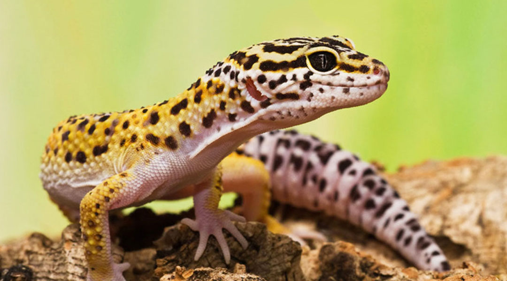
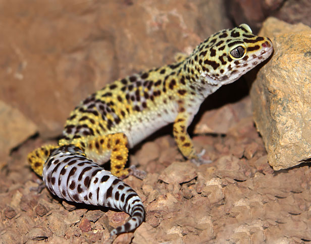
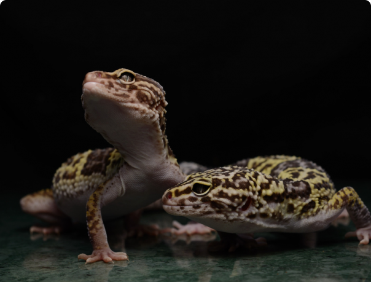

Эублефары
В роду эублефаров насчитывается пять основных разновидностей: Пятнистые, Туркменские, Афганские, Иранские и Хардвика. Самыми популярными являются Пятнистые эублефары, которых нередко содержат в специальных террариумах в домашних условиях. Эти ящерицы отличаются необычной внешностью, привлекают красивой леопардовой окраской.

Пятнистый эублефар
Пятнистые эублефары – спокойные и покладистые питомцы. Они абсолютно не агрессивны, быстро привыкают к людям и очень привязываются к своему владельцу. Легко идут на контакт с маленькими детьми. Родителям не стоит переживать, умная ящерица не обидит ребенка. А еще они часто просятся на руки к хозяину и могут засыпать прямо на ладошках, словно милые котята.
Другие виды эублефаров – более редкие обитатели домашних террариумов. Ящерицы Туркменской породы – очень редкий вид, занесенный в Красную книгу. Иранские эублефары отличаются большим размером тела и длинными лапами. У представителей рода Хардвика на спине рыже-коричневые полосы. Афганские ящеры относятся к подвиду Иранской породы.

Туркменский эублефар

Иранский эублефар
У эублефаров дружелюбный характер, но проявляют они его не сразу. В первые дни после покупки могут показаться слегка агрессивными, что связано со стрессом и адаптацией в чужом доме. Однако уже через несколько дней ящерица привыкнет к новому месту обитания и покажет свой добрый и покладистый характер.
В дикой природе эублефары живут поодиночке, но в террариуме можно содержать пару рептилий. Главное, чтобы они были разного пола. Два самца на одной территории не приживутся, они будут постоянно драться и делить между собой общие владения. А вот две самки вполне могут стать дружелюбными соседями.